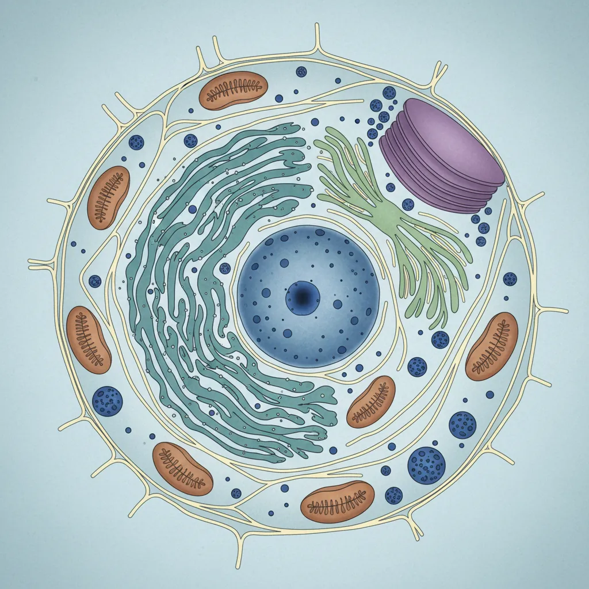
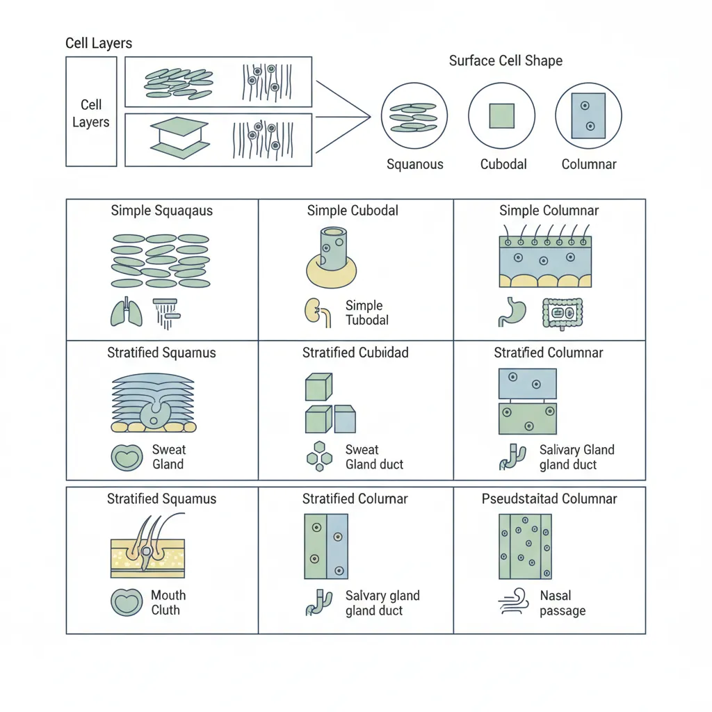
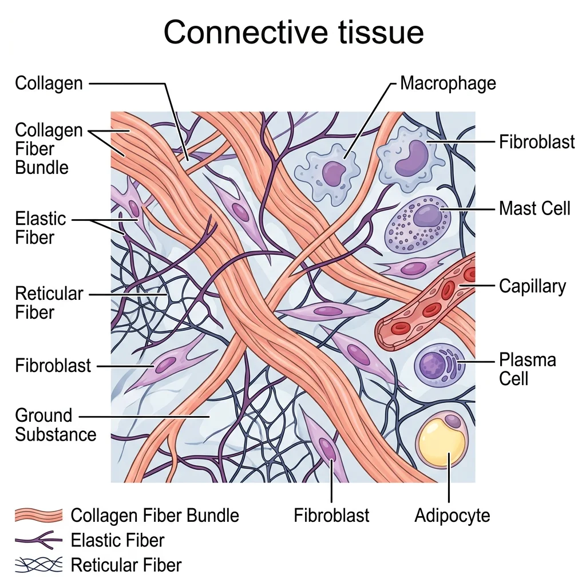
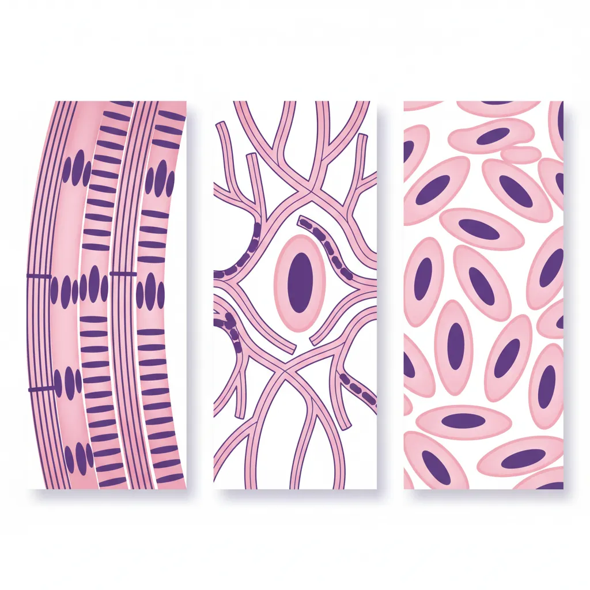
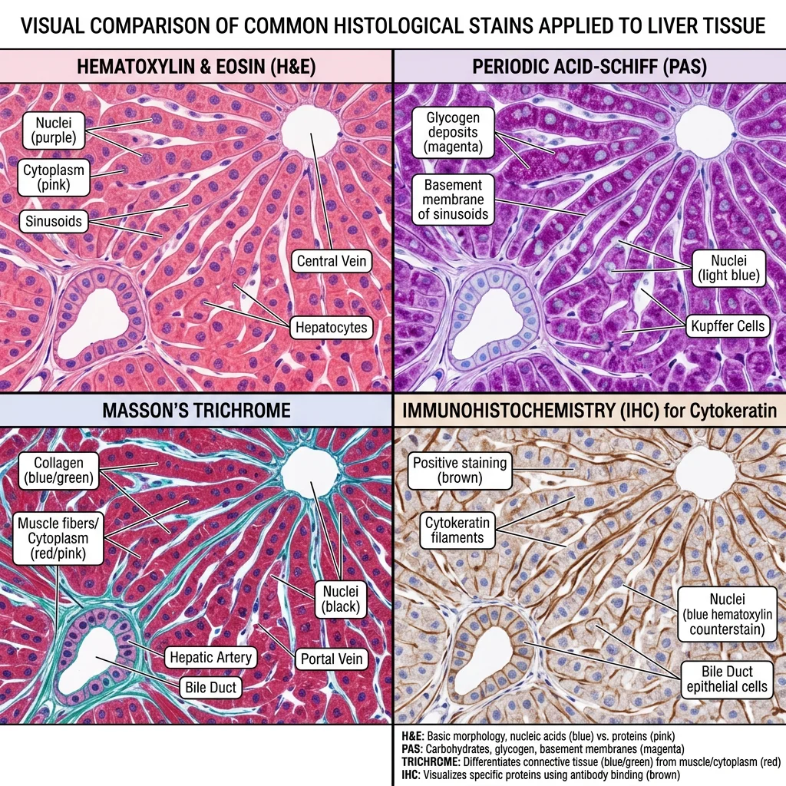
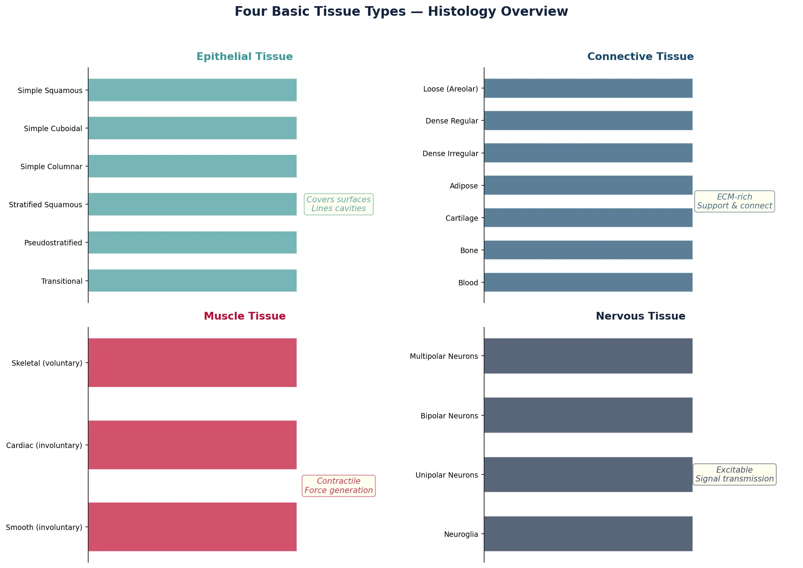

Human Anatomy Mastery
Anatomical Terminology & Body Planes
Directional terms, planes, cavities, tissuesSkeletal System & Joints
Osteology, axial & appendicular, arthrologyMuscular System & Movement
Muscle types, functional groups, biomechanicsCardiovascular & Lymphatic Anatomy
Heart, vessels, lymphatics, clinical linksNervous System & Neuroanatomy
CNS, PNS, autonomic, functional pathwaysVisceral Anatomy — Thorax & Abdomen
Thoracic & abdominal organs, peritoneumHead, Neck & Special Senses
Skull foramina, eye, ear, oral anatomySurface Anatomy & Clinical Imaging
Landmarks, X-ray, CT, MRI, proceduresHistology & Microscopic Anatomy
Cell ultrastructure, tissue & organ histologyEmbryology & Developmental Anatomy
Germ layers, organogenesis, malformationsFunctional & Applied Anatomy
Biomechanics, posture, gait, integrationRegional Dissection Mastery
Upper/lower limb, thorax, abdomen, pelvisCell Ultrastructure
Before we can understand tissues, we must understand the cells that compose them. Every cell is a microscopic city — with power plants, factories, highways, and communication systems. The invention of the electron microscope in the 1930s opened a new world: where light microscopy could resolve structures down to ~200 nm, transmission electron microscopy (TEM) pushed resolution below 1 nm, revealing organelles in astonishing detail.

Organelles & Membrane Systems
The cell is bounded by a plasma membrane — a phospholipid bilayer studded with proteins that control what enters and exits. Think of it as a selective border checkpoint. Inside, the cytoplasm contains a rich ecosystem of organelles:
| Organelle | Structure | Function | Clinical Link |
|---|---|---|---|
| Nucleus | Double membrane, nuclear pores, nucleolus | DNA storage, gene expression, ribosome assembly | Nuclear abnormalities indicate cancer |
| Rough ER | Ribosome-studded membrane sheets | Protein synthesis, folding, quality control | Prominent in antibody-secreting plasma cells |
| Smooth ER | Tubular network, no ribosomes | Lipid synthesis, detoxification, Ca²⁺ storage | Extensive in hepatocytes (drug metabolism) |
| Golgi Apparatus | Stacked cisternae (cis → trans) | Protein modification, sorting, packaging | Active in goblet cells producing mucus |
| Mitochondria | Double membrane, cristae, own DNA | ATP production via oxidative phosphorylation | Mitochondrial myopathies, "ragged red fibers" |
| Lysosomes | Single membrane, acidic interior (pH ~5) | Intracellular digestion, autophagy | Tay-Sachs, Gaucher disease (enzyme deficiency) |
| Peroxisomes | Single membrane, crystalline core | Fatty acid oxidation, H₂O₂ detox | Zellweger syndrome (peroxisome biogenesis defect) |
The Discovery of the Cell — Robert Hooke (1665)
Robert Hooke coined the term "cell" after examining cork under a compound microscope and seeing small chambers resembling monks' cells in a monastery. Yet it took nearly three centuries — from Hooke's observation through Schleiden and Schwann's cell theory (1838–39) to the electron microscopy era of the 1950s — before scientists could see what truly lies inside those chambers. George Palade's Nobel Prize-winning work (1974) on ribosomes and the secretory pathway remains foundational to understanding protein trafficking in every cell of the human body.
The endomembrane system — comprising the ER, Golgi, lysosomes, and vesicles — operates like a coordinated production and delivery network. Proteins synthesized on the rough ER travel through the Golgi for modification (glycosylation, phosphorylation), then are sorted into vesicles destined for the plasma membrane, lysosomes, or secretion.
Cytoskeleton & Cell Junctions
The cytoskeleton provides structural support, enables cell movement, and organizes intracellular transport. Imagine it as the road network plus the building scaffolding of our cellular city:
- Microfilaments (Actin) — 7 nm diameter; involved in cell shape, contraction (with myosin in muscle cells), and movement (lamellipodia). Critical in microvilli of intestinal epithelium.
- Intermediate Filaments — 10 nm diameter; provide tensile strength. Keratin in epithelial cells, vimentin in mesenchymal cells, neurofilaments in neurons, desmin in muscle. Pathologists use antibodies against these proteins to identify tumor origin — keratins indicate carcinoma, vimentin suggests sarcoma.
- Microtubules — 25 nm hollow tubes of α/β-tubulin; form the mitotic spindle, cilia, flagella, and serve as tracks for motor proteins (kinesin and dynein). Disruption by drugs like colchicine or taxol halts cell division — the basis for chemotherapy.
Cell junctions connect cells to each other and to the extracellular matrix, forming the structural basis of tissues:
| Junction Type | Proteins | Function | Location Example |
|---|---|---|---|
| Tight Junctions (Zonula Occludens) | Claudins, occludins | Seal intercellular space; prevent paracellular leakage | Blood-brain barrier, intestinal epithelium |
| Adherens Junctions (Zonula Adherens) | Cadherins, catenins, actin | Mechanical linkage between cells | Below tight junctions in epithelium |
| Desmosomes (Macula Adherens) | Desmogleins, desmocollins, intermediate filaments | Spot-weld resistance to shearing forces | Skin (epidermis), heart (intercalated discs) |
| Gap Junctions | Connexins forming connexons | Direct cell-to-cell communication (ions, small molecules) | Cardiac muscle, smooth muscle, neurons |
| Hemidesmosomes | Integrins, intermediate filaments | Anchor cells to basement membrane | Epidermal-dermal junction |
Epithelial Tissue
Epithelial tissue covers body surfaces, lines cavities and organs, and forms glands. It is the body's interface with the outside world — a living barrier that simultaneously protects, absorbs, secretes, and senses. Epithelia are classified by two criteria: the number of cell layers and the shape of the surface cells.

Classification & Types
| Type | Layers | Cell Shape | Location | Function |
|---|---|---|---|---|
| Simple Squamous | Single | Flat | Alveoli, Bowman's capsule, endothelium, mesothelium | Diffusion, filtration |
| Simple Cuboidal | Single | Cube-shaped | Kidney tubules, thyroid follicles, ovary surface | Secretion, absorption |
| Simple Columnar | Single | Tall, rectangular | Stomach, intestines, gallbladder | Secretion, absorption (often with microvilli) |
| Pseudostratified Columnar | Single (appears multi-layered) | Varying heights | Trachea, bronchi (ciliated with goblet cells) | Mucus secretion, particle clearance |
| Stratified Squamous (keratinized) | Multiple | Flat surface cells | Skin (epidermis) | Protection against abrasion, waterproofing |
| Stratified Squamous (non-keratinized) | Multiple | Flat surface cells | Oral cavity, esophagus, vagina | Protection in moist environments |
| Transitional (Urothelium) | Multiple (stretchy) | Dome-shaped → flat when stretched | Urinary bladder, ureters | Stretching, impermeability to urine |
Epithelium as a Building's Walls
Think of epithelial tissue like the walls and coverings of a building. Simple squamous is like glass windows — thin, allowing things through (gas exchange in lungs). Stratified squamous is like brick walls — thick and tough, designed to withstand abuse (skin). Transitional epithelium is like an accordion door — it stretches and contracts as the bladder fills and empties. The type of "wall" always matches the demands placed on that surface.
Glands & Secretory Mechanisms
Glands develop from epithelial surfaces and are classified by how they release their products:
- Exocrine glands — secrete via ducts to epithelial surfaces (sweat, salivary, pancreatic glands)
- Endocrine glands — ductless; secrete hormones directly into blood (thyroid, adrenal, pituitary)
Exocrine secretion modes:
- Merocrine (Eccrine) — exocytosis; no cell damage (most sweat glands, pancreas)
- Apocrine — apical portion of cell pinches off with product (mammary glands, axillary sweat glands)
- Holocrine — entire cell disintegrates to release product (sebaceous glands)
Connective Tissue
Connective tissue is the most abundant and diverse tissue type in the body. Unlike epithelium, which is mostly cells, connective tissue is characterized by its extracellular matrix (ECM) — a combination of ground substance and protein fibers produced by the resident cells. It has three components: cells, fibers, and ground substance.

The three main fiber types are:
- Collagen fibers — thick, strong, resist tension (Type I in skin/bone/tendon; Type II in cartilage; Type III reticular fibers)
- Elastic fibers — thin, stretchy, recoil (elastin + fibrillin; abundant in arterial walls, lungs, skin)
- Reticular fibers — thin, branching collagen III networks forming scaffolding (lymph nodes, spleen, bone marrow)
Loose & Dense Connective
Loose (Areolar) Connective Tissue is the most common type — found beneath epithelium, around blood vessels, and between organs. It contains all three fiber types loosely arranged in a gel-like ground substance, along with fibroblasts, macrophages, mast cells, and wandering white blood cells. Think of it as the "packing material" that fills spaces and allows flexibility.
Adipose tissue is a specialized loose connective tissue storing energy as fat droplets. White adipose insulates and cushions; brown adipose, rich in mitochondria, generates heat in neonates. Excess white adipose is the pathological basis of obesity and its metabolic consequences.
Dense connective tissue comes in three varieties:
| Subtype | Fiber Arrangement | Location | Function |
|---|---|---|---|
| Dense Regular | Parallel collagen bundles | Tendons, ligaments, aponeuroses | Resist unidirectional tension |
| Dense Irregular | Collagen in multiple directions | Dermis of skin, organ capsules, periosteum | Resist multidirectional tension |
| Dense Elastic | Parallel elastic fibers | Ligamenta flava, aortic wall | Stretch and recoil |
Cartilage, Bone & Blood
These are specialized connective tissues with unique matrices:
Cartilage — cells (chondrocytes) sit in lacunae within a firm, flexible matrix. It is avascular, receiving nutrients by diffusion — which explains why cartilage heals slowly.
- Hyaline cartilage — glass-smooth, covers articular surfaces, forms tracheal rings, and is the embryonic skeleton precursor (most common type)
- Elastic cartilage — flexible (ear pinna, epiglottis)
- Fibrocartilage — tough, resistant to compression (intervertebral discs, pubic symphysis, menisci)
Bone (Osseous Tissue) — the hardest connective tissue. Osteocytes reside in lacunae interconnected by canaliculi. Compact bone is organized into osteons (Haversian systems) with concentric lamellae around a central canal containing blood vessels. Spongy (cancellous) bone has a trabecular architecture optimized for strength with minimal weight.
Blood — a liquid connective tissue with plasma as its matrix. Contains erythrocytes (RBCs), leukocytes (WBCs), and thrombocytes (platelets). Blood connects all tissues, delivering oxygen and collecting waste — the body's river system.
Ehlers-Danlos Syndrome — When Collagen Goes Wrong
Ehlers-Danlos syndrome (EDS) is a group of inherited disorders affecting collagen synthesis. Patients with hypermobile EDS have joints that extend far beyond normal range, skin that stretches like rubber, and fragile blood vessels. In vascular EDS (type IV), defective type III collagen can lead to arterial rupture and organ perforation — a life-threatening emergency. Under the microscope, skin biopsies reveal disorganized collagen fiber bundles with reduced cross-linking, demonstrating how a molecular defect translates to visible tissue pathology.
Muscle & Nervous Tissue
Muscle and nervous tissue are the body's two excitable tissues — both can generate and propagate electrical impulses. Where muscle converts electrical signals into mechanical force, nervous tissue processes and transmits information.

Skeletal, Cardiac & Smooth Muscle Histology
| Feature | Skeletal Muscle | Cardiac Muscle | Smooth Muscle |
|---|---|---|---|
| Striations | Yes (A-bands, I-bands, Z-lines) | Yes (less prominent) | No |
| Nuclei | Multiple, peripheral | 1–2, central | Single, central, cigar-shaped |
| Control | Voluntary (somatic) | Involuntary (autonomic) | Involuntary (autonomic) |
| Cell Shape | Long, cylindrical fibers | Branching, shorter cells | Spindle-shaped (fusiform) |
| Intercalated Discs | Absent | Present (desmosomes + gap junctions) | Absent (gap junctions present) |
| Regeneration | Limited (satellite cells) | Very limited | Good capacity |
| Location | Attached to skeleton | Heart wall (myocardium) | Vessel walls, GI tract, uterus |
Under H&E stain, skeletal muscle fibers appear as long, multinucleated cylinders with peripheral nuclei and clear cross-striations. Cardiac muscle cells are shorter, branching, with central nuclei and intercalated discs visible at high magnification — these discs are the defining histological feature. Smooth muscle cells appear as fusiform profiles with a single central nucleus; in cross-section, they show varying diameters because cells are cut at different points along their spindle shape.
Neuron Types & Glia
Nervous tissue consists of two cell populations: neurons (signal generation and transmission) and neuroglia (support, insulation, protection).
Neuron Classification by Structure:
- Multipolar neurons — one axon, many dendrites (most common; motor neurons, interneurons)
- Bipolar neurons — one axon, one dendrite (retina, olfactory epithelium)
- Pseudounipolar (Unipolar) neurons — single process that splits into peripheral and central branches (dorsal root ganglia sensory neurons)
Neuroglial Cells:
| Cell Type | Location | Function | Clinical Relevance |
|---|---|---|---|
| Astrocytes | CNS | Blood-brain barrier, ion regulation, neurotransmitter recycling | Glioblastoma (most common malignant brain tumor) |
| Oligodendrocytes | CNS | Myelin formation (one cell myelinates multiple axons) | Multiple sclerosis (demyelination) |
| Schwann Cells | PNS | Myelin formation (one cell per internode) | Guillain-Barré syndrome |
| Microglia | CNS | Immune defense, phagocytosis | Activated in neurodegeneration |
| Ependymal Cells | CNS ventricles | Line ventricles, circulate CSF (some are ciliated) | Ependymomas |
| Satellite Cells | PNS ganglia | Surround and support neuronal cell bodies | Herpes virus latency |
Organ Histology
Understanding organ histology means recognizing how different tissue types combine into functional organ architectures. Each organ has a characteristic microscopic pattern — its histological "fingerprint" — that allows pathologists to identify tissue specimens and detect disease.
Skin
The skin (integument) is the body's largest organ and demonstrates layered tissue organization beautifully:
- Epidermis — keratinized stratified squamous epithelium organized into five layers (from deep to superficial): stratum basale, stratum spinosum, stratum granulosum, stratum lucidum (thick skin only), stratum corneum. Contains keratinocytes (90%), melanocytes, Langerhans cells (immune), and Merkel cells (touch).
- Dermis — connective tissue divided into papillary dermis (loose connective tissue with dermal papillae increasing surface area) and reticular dermis (dense irregular connective tissue providing strength and elasticity). Contains hair follicles, sweat glands, sebaceous glands, blood vessels, and nerve endings.
- Hypodermis (Subcutis) — not technically part of the skin; adipose tissue that insulates and cushions.
GI Tract
The gastrointestinal tract maintains a consistent four-layer architecture from esophagus to anus:
- Mucosa — epithelium + lamina propria (loose connective tissue) + muscularis mucosae (thin smooth muscle)
- Submucosa — dense connective tissue with Meissner's (submucosal) nerve plexus, blood vessels, and sometimes glands
- Muscularis Externa — inner circular + outer longitudinal smooth muscle layers with Auerbach's (myenteric) plexus between them
- Serosa/Adventitia — serosa where peritoneum covers; adventitia where it does not (esophagus, retroperitoneal structures)
Key regional differences: the stomach has three muscle layers (added oblique layer) and gastric pits with parietal cells (secrete HCl) and chief cells (secrete pepsinogen). The small intestine has villi (increasing absorptive surface 600-fold) with a brush border of microvilli. The large intestine lacks villi but has abundant goblet cells and crypts of Lieberkühn.
Liver
The liver's histological unit is the hepatic lobule — a hexagonal arrangement with a central vein surrounded by radiating plates of hepatocytes. At the corners (portal triads), you find branches of the hepatic artery, portal vein, and bile duct. Blood flows from the portal triads inward through sinusoids (lined by fenestrated endothelium and Kupffer cells — resident macrophages) toward the central vein. Bile flows in the opposite direction through bile canaliculi toward bile ducts.
Kidney
The functional unit of the kidney is the nephron. Each kidney contains approximately 1 million nephrons, each consisting of a glomerulus (capillary tuft within Bowman's capsule), proximal convoluted tubule (PCT), loop of Henle, distal convoluted tubule (DCT), and collecting duct.
Histological landmarks: the glomerulus shows visceral epithelial cells (podocytes) wrapping capillaries with foot processes; the PCT has a prominent brush border and acidophilic (eosinophilic) cytoplasm due to abundant mitochondria; the DCT lacks the brush border and has a wider lumen. The juxtaglomerular apparatus — where the DCT contacts the afferent arteriole — contains macula densa cells and renin-secreting granular cells, critical for blood pressure regulation.
Lung
The respiratory system transitions from conducting airways (trachea → bronchi → bronchioles) to respiratory zones (respiratory bronchioles → alveolar ducts → alveoli). Histologically, the conducting airways have cartilage support and pseudostratified ciliated columnar epithelium with goblet cells. As airways branch, they lose cartilage and transition to simple cuboidal then simple squamous epithelium.
The alveolus is where gas exchange occurs. Its wall consists of:
- Type I pneumocytes — flat cells covering 95% of alveolar surface (gas exchange)
- Type II pneumocytes — cuboidal cells that secrete surfactant (reducing surface tension to prevent alveolar collapse) and serve as progenitor cells
- Alveolar macrophages (dust cells) — phagocytose inhaled particles and pathogens
Infant Respiratory Distress Syndrome
Premature infants born before 35 weeks often lack adequate surfactant production by Type II pneumocytes. Without surfactant, alveoli collapse during expiration (atelectasis), requiring enormous effort to re-inflate with each breath. Under the microscope, collapsed alveoli are lined by hyaline membranes — eosinophilic proteinaceous material — giving the condition its older name: "hyaline membrane disease." Treatment with exogenous surfactant therapy and antenatal corticosteroids (which accelerate fetal lung maturation) has dramatically improved survival rates.
Staining & Histopathology
Staining transforms transparent, colorless tissue sections into interpretable images. Without stains, histology would be impossible — the microscope alone reveals only outlines and refractive differences. The choice of stain determines what structures become visible and what information a pathologist can extract.

Common Stains (H&E, PAS, Masson)
| Stain | Components | What It Shows | Clinical Use |
|---|---|---|---|
| H&E (Hematoxylin & Eosin) | Hematoxylin (blue/purple) + Eosin (pink/red) | Nuclei (blue), cytoplasm/ECM (pink) | Universal "routine" stain; used on 99% of biopsies |
| PAS (Periodic Acid-Schiff) | Periodic acid + Schiff reagent (magenta) | Glycogen, glycoproteins, mucins, basement membranes | Kidney disease (basement membrane thickening), fungal infections |
| Masson's Trichrome | Three dyes (nuclei black, cytoplasm red, collagen blue) | Collagen/fibrosis vs. muscle | Liver fibrosis staging, cardiac fibrosis |
| Silver Stains (Reticulin) | Silver impregnation | Reticular fibers (type III collagen) | Liver architecture, lymph node evaluation |
| Congo Red | Congo red dye + polarized light | Amyloid deposits (apple-green birefringence) | Amyloidosis diagnosis |
| Oil Red O | Fat-soluble dye on frozen sections | Lipid droplets (red) | Fatty liver disease, lipid storage diseases |
| Immunohistochemistry (IHC) | Antibody-chromogen complex | Specific proteins (cytokeratins, CD markers, etc.) | Tumor classification, receptor status (ER/PR/HER2) |
Biopsy Interpretation
A biopsy is a tissue sample removed for microscopic examination — the gold standard for diagnosis in oncology, dermatology, gastroenterology, and many other fields. The systematic approach to interpreting a histological slide follows this sequence:
- Low power (4×) — Scan the entire section. Identify the tissue/organ. Note architecture: Is the normal pattern preserved or distorted?
- Medium power (10×) — Examine specific regions. Look for inflammation, fibrosis, necrosis, or abnormal cell populations.
- High power (40×) — Assess cellular detail. Nuclear-to-cytoplasmic ratio, chromatin pattern, mitotic figures, nuclear pleomorphism.
- Special stains/IHC — Apply targeted stains to confirm the diagnosis (e.g., Congo red for amyloid, IHC for tumor markers).
Diagnosing Celiac Disease by Duodenal Biopsy
A 28-year-old woman presents with chronic diarrhea, weight loss, and iron deficiency anemia. Anti-tissue transglutaminase antibodies are elevated. An upper endoscopy with duodenal biopsy reveals the histological hallmarks of celiac disease: villous atrophy (blunted or absent villi), crypt hyperplasia (elongated, hyperplastic crypts), and increased intraepithelial lymphocytes (>25 per 100 epithelial cells). Classified as Marsh type 3, these findings are pathognomonic when combined with serology. A gluten-free diet allows the villi to regenerate — repeat biopsy months later shows restored villous architecture, confirming diagnosis and treatment response.
Clinical Applications
Modern histopathology extends far beyond H&E staining. Today, pathologists use a multimodal toolkit:
- Immunohistochemistry (IHC) — Antibodies labeled with chromogens detect specific proteins in tissue. Essential for tumor classification (e.g., HER2 status in breast cancer determines eligibility for targeted therapy) and identifying cell lineage (cytokeratin = epithelial, vimentin = mesenchymal, S100 = melanocytic/neural).
- In situ hybridization (ISH/FISH) — Detects specific DNA/RNA sequences within tissue. FISH for HER2 gene amplification, EBV-encoded RNA in lymphomas.
- Electron Microscopy (EM) — Still essential for renal pathology (podocyte foot processes, immune complex deposits), identification of rare tumors, and ciliary dyskinesia diagnosis.
- Digital Pathology & AI — Whole-slide scanning and machine learning algorithms can now assist in detecting metastases in lymph nodes, grading tumors, and quantifying biomarkers with superhuman consistency.
Practice & Tools
Applied Code Example
Use this Python script to create a visual comparison chart of the four basic tissue types, their subtypes, and key identifying features — useful for exam review:
import matplotlib.pyplot as plt
import matplotlib.patches as mpatches
import numpy as np
# Define the four tissue types and their subtypes
tissues = {
'Epithelial': {
'subtypes': ['Simple Squamous', 'Simple Cuboidal', 'Simple Columnar',
'Stratified Squamous', 'Pseudostratified', 'Transitional'],
'color': '#3B9797',
'key_feature': 'Covers surfaces\nLines cavities'
},
'Connective': {
'subtypes': ['Loose (Areolar)', 'Dense Regular', 'Dense Irregular',
'Adipose', 'Cartilage', 'Bone', 'Blood'],
'color': '#16476A',
'key_feature': 'ECM-rich\nSupport & connect'
},
'Muscle': {
'subtypes': ['Skeletal (voluntary)', 'Cardiac (involuntary)',
'Smooth (involuntary)'],
'color': '#BF092F',
'key_feature': 'Contractile\nForce generation'
},
'Nervous': {
'subtypes': ['Multipolar Neurons', 'Bipolar Neurons',
'Unipolar Neurons', 'Neuroglia'],
'color': '#132440',
'key_feature': 'Excitable\nSignal transmission'
}
}
fig, axes = plt.subplots(2, 2, figsize=(14, 10))
fig.suptitle('Four Basic Tissue Types — Histology Overview',
fontsize=16, fontweight='bold', color='#132440', y=0.98)
for ax, (tissue_name, info) in zip(axes.flat, tissues.items()):
n = len(info['subtypes'])
y_positions = np.arange(n)
bars = ax.barh(y_positions, [1]*n, color=info['color'], alpha=0.7,
edgecolor='white', height=0.6)
ax.set_yticks(y_positions)
ax.set_yticklabels(info['subtypes'], fontsize=9)
ax.set_xlim(0, 1.5)
ax.set_xticks([])
ax.set_title(f'{tissue_name} Tissue', fontsize=13,
fontweight='bold', color=info['color'], pad=10)
ax.invert_yaxis()
# Add key feature annotation
ax.text(1.2, n/2, info['key_feature'], fontsize=10,
ha='center', va='center', fontstyle='italic',
color=info['color'], alpha=0.8,
bbox=dict(boxstyle='round,pad=0.3', facecolor='lightyellow',
edgecolor=info['color'], alpha=0.5))
ax.spines['top'].set_visible(False)
ax.spines['right'].set_visible(False)
ax.spines['bottom'].set_visible(False)
plt.tight_layout(rect=[0, 0, 1, 0.95])
plt.savefig('tissue_types_overview.png', dpi=150, bbox_inches='tight')
plt.show()
print("Chart saved as tissue_types_overview.png")
Histology Report Tool
Use this interactive tool to document tissue specimens and create structured histology identification reports. Export as Word, Excel, or PDF for study or lab records.
Histology Report Generator
Fill in the fields below to create a structured histology and tissue identification report. Download as Word, Excel, or PDF.
Conclusion & Next Steps
Histology bridges the gap between gross anatomy and cellular biology. In this article, we explored cell ultrastructure — from organelles to the cytoskeleton and cell junctions that hold tissues together. We classified the four fundamental tissue types (epithelial, connective, muscle, nervous) and studied the microscopic architecture of key organs including the skin, GI tract, liver, kidney, and lung. Finally, we examined the staining techniques and interpretive approach that pathologists use daily to diagnose disease from tissue sections.
These microscopic foundations are essential for understanding how normal anatomy becomes abnormal in disease — the very basis of pathology. As you continue studying, remember that every macroscopic structure you dissect or image is built from these microscopic building blocks, each with its own characteristic histological signature.